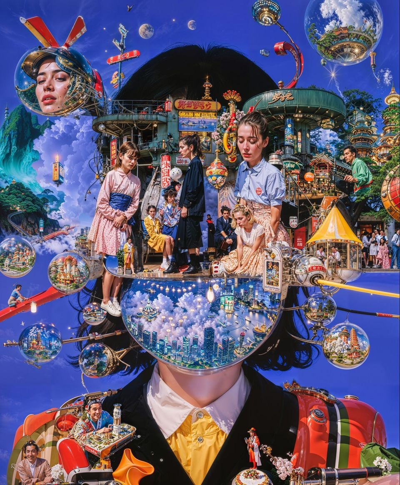
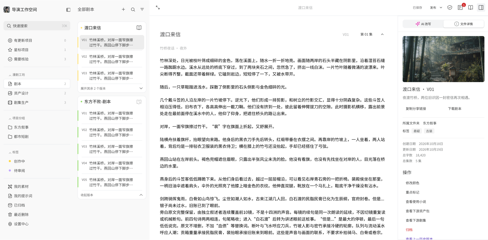
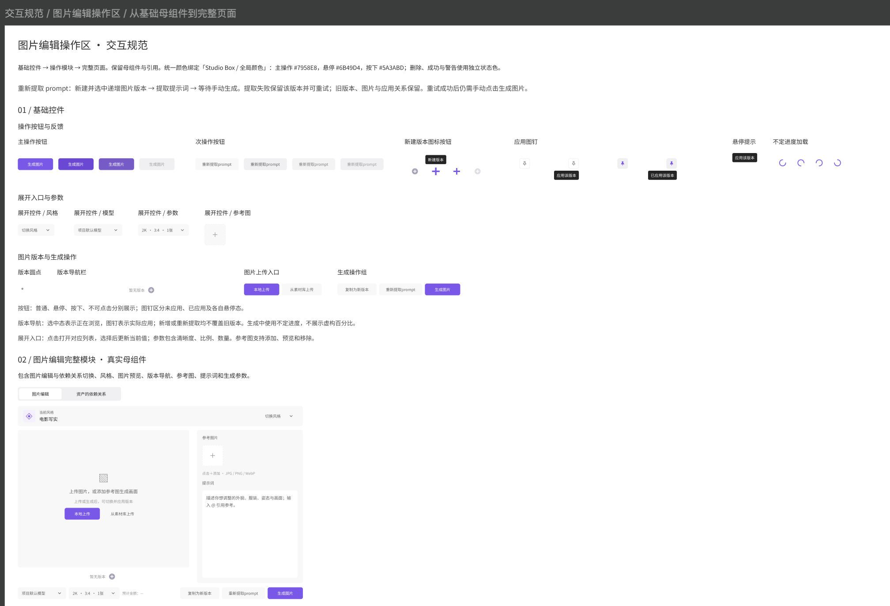

主导航
承载跨模块定位、更新与核验任务、项目分组以及个人资源，让全局状态始终可达。

AI Creative Workspace
我围绕用户真实的工作路径，划分工作区、环岛区与重要信息存放区，让创作者专注于当前任务，降低认知功能切换成本。系统充分尊重个人意愿：是否暂停或终止当前创作、是否开启新的分支流程，始终由用户决定。
我沿着用户真实的工作路径，将全局定位、任务上下文、核心工作和重要信息分为四个稳定区域。清晰的信息分类减少来回寻找与功能切换；分支流程保持可见但不主动侵入，让用户始终决定何时中断、何时继续，以及是否开启新的创作路径。

承载跨模块定位、更新与核验任务、项目分组以及个人资源，让全局状态始终可达。
保留当前模块中的项目、内容和版本关系，在快速切换时维持中央任务上下文。
只承载当前最重要、最需要持续注意的阅读与编辑任务，减少功能对专注的干扰。
放置 AI 改写、文件信息和低频操作：保持重要信息可见，但不与核心任务争夺注意力。
环岛不是二级导航，而是主导航与工作区之间的上下文缓冲层。
它让用户能够在项目、剧本和版本之间快速切换，同时保持中央工作区与操作状态稳定。相比把层级不断塞进面包屑或弹窗，它利用固定空间建立可预测的工作节奏。
一份可交付的交互稿不仅要呈现最终页面，还需要回答组件在什么条件下变化、系统怎样反馈、数据是否保留、失败后如何恢复，以及下一步允许用户做什么。

AI 生成可能失败、耗时不可预测，结果也不一定可用。Storm 把这些不确定性提前纳入产品状态，而不是在开发阶段依赖临时补逻辑。
提取失败时保留当前版本并允许重试，避免用户因为一次失败丢失已有工作。
新建版本或重新提取不会覆盖旧版本，历史图片与应用关系继续保留。
无法准确预测生成时长时使用不定进度反馈，不展示没有依据的加载百分比。
重试成功后仍由用户主动触发生成，关键生产动作保留明确的人工确认。
从母组件、状态规则到完整页面和可操作 Demo，Storm 展示的不只是视觉结果，而是产品逻辑如何逐层落地。
建立按钮、图钉、版本入口、加载和反馈状态。
组合上传、参数、版本与生成操作，明确依赖关系。
把模块放回真实工作区，验证信息层级与任务节奏。
用可操作原型对齐关键行为、页面转换和研发实现。
工具优化与生成质量改进共同推动自制团队制作效率提升 20%。
进入 Storm Demo ↗